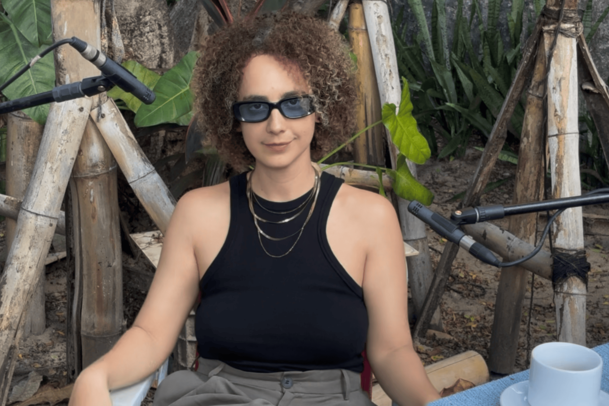

SONA apresenta CLARISSE AIRES

Clarisse Aires chegou à experimentação sem pular etapas. Aprendeu teoria, estudou execução, se dedicou à técnica da flauta passando pela rígida formação universitária em música, onde, como ela mesma diz, “a competência é medida por quão preciso você é na cópia”. É o caminho que muitos músicos percorrem: a busca por excelência formal, por domínio do repertório, por afinação e fidelidade ao escrito. Mas Clarisse encontrou, nesse processo, algo que a inquietava. Aos poucos, foi abrindo frestas para improvisar, sair do lugar do intérprete e se aproximar de sua inventividade.
Há nesse movimento uma tensão criativa entre forma e liberdade, entre o que se aprende e o que se desaprende para criar. Clarisse Aires opera dentro desse paradoxo. Com sólida formação musical, escolheu a experimentação livre como espaço de descoberta. Nesse sentido, seu trabalho se aproxima ao de artistas como Toshimaru Nakamura, que, após anos como guitarrista e engenheiro de som, abandona os instrumentos convencionais e cria música a partir de uma no-input mixing board, uma mesa de som conectada a si mesma, gerando apenas ruído, microfonia e instabilidade.
Outro paralelo possível é com Tom Zé, cuja trajetória é marcada por uma constante reinvenção da linguagem da canção brasileira. Formado em composição e regência na Bahia, Tom Zé nunca deixou de lado a sofisticação técnica, mas a utiliza como trampolim para a desobediência. Seja incorporando ruídos industriais, seja subvertendo as estruturas da música popular com colagens, ironias e experimentações formais. Em Clarisse, essa mesma urgência de subverter o que se espera do “som correto” aparece como técnica, dando vazão a uma música que emerge do risco.
Hoje, essa vontade de experimentar encontra forma num trabalho de difícil rotulação. Clarisse está desenvolvendo seu próximo disco, Trocando de Pele, título que alude ao processo das serpentes, que, ao crescerem, precisam abandonar a pele antiga para continuar vivas. A metáfora é precisa. Sua música carrega essa pulsão por transformação, por deixar para trás formas que já não servem. O ponto de partida é a música brasileira, mas o percurso não se prende a gêneros nem estruturas fixas. Há melodia, há arranjo, mas também ruído, fragmento, sopro, silêncio. Cada elemento é tratado como possibilidade, e não como ornamento.
Trocando de Pele se aproxima a uma linhagem de artistas que atravessam as fronteiras entre o popular e o experimental sem a pretensão de resolvê-las. Há algo de Juçara Marçal em Delta Estácio Blues (2021), por exemplo, onde ruído eletrônico e ancestralidade rítmica coexistem na mesma pulsação. Ou ainda da pesquisa de Arrigo Barnabé nos anos 1980, quando a canção era dissecada para revelar suas fissuras. De forma semelhante, Clarisse desafia o repertório que a formou, o reinterpreta, o tensiona. Ao usar a flauta como fio condutor, ela transforma o instrumento em extensão da voz e do pensamento, dissolvendo hierarquias entre composição e improviso, entre execução e experimentação.
Esse trânsito entre linguagens e práticas não é exatamente uma fusão, mas uma invenção de espaços possíveis. “A experimentação não cabe em todo lugar”, diz Clarisse, “então o meu processo é justamente fazer caber”. Essa visão resume bem a dinâmica de seu trabalho. Se trata de criar condições para que elementos distintos coexistam, mesmo que em atrito. Essa busca por se fazer caber como artista é também política. Ela destaca que ser mulher em ambientes que sistematicamente ecoam o machismo estrutural vigente na sociedade brasileira ainda exige, em muitas vezes, um ato de vigilância e resistência continua.
Nesse sentido, Clarisse compreendeu que criar música também é criar lugar. Sua música, assim, emerge desse duplo gesto: abrir espaço para o som e, com ele, abrir espaço para si mesma, tanto no palco, como no estúdio.
Na conversa com a SONA, Clarisse lembra que a flauta não é apenas aquele instrumento europeu, cintilante e disciplinado das orquestras. Bem antes disso, foi sopro ancestral, ferramenta de cura e comunicação entre mundos, presente em rituais de povos originários em diferentes partes do planeta, “ecoando em muitas florestas”. Também lembra que a flauta é som de festa e resistência no Brasil. Está nos pifes do Nordeste, no Cabaçal, nos cortejos de rua. A flauta, nesse sentido, é um instrumento em disputa, atravessado por camadas históricas, culturais e simbólicas que nem sempre se harmonizam.
Clarisse não busca apagar essas camadas nem se fixar em uma delas. O que ela faz é justamente tensionar essas heranças, desmontar a ideia de um som “puro”. Ao usar pedais, efeitos, distorções e sobreposições vocais, ela amplia o campo expressivo da flauta, a reimaginando como meio eletrônico. Mas o gesto de Clarisse é sutil. Em vez de negar o brilho da flauta clássica, ela o sabota delicadamente, deixando o ruído entrar, cortando com voz, fragmento, silêncio.
O resultado é uma escuta que exige atenção. Não estamos mais diante de um instrumento “limpo”, mas de um corpo sonoro expandido, onde o erro, o desvio e o imprevisto são bem-vindos. Ao desconstruir o brilho, Clarisse também questiona o ideal de perfeição que historicamente exclui vozes, corpos e sons desviantes.
A voz, aliás, aparece com frequência em suas composições, mas não no enquadramento clássico da “cantora”. Clarisse canta sim, mas como quem respira ou prolonga o sopro da flauta. Sua voz não vem para ocupar o centro, mas para se fundir ao instrumento, ao corpo, ao ambiente. É um canto que escapa das categorias, como em Hermeto Pascoal em sua Música da Lagoa (1985), onde os limites entre melodia, ruído, fala e respiração são borrados em nome de uma musicalidade mais ampla e orgânica.
Mais do que se recusar a escolher entre ser flautista ou cantora, compositora ou improvisadora, o que marca seu trabalho é a recusa da definição como regra. Seu som se estrutura na instabilidade, em formas que aparecem para logo serem transformadas, padrões que se insinuam mas não se fixam.
Essa escuta em aberto, que se permite errar, voltar, repetir e desviar, tem muito a ver com o processo de Clarisse. Ela diz que costuma se gravar sozinha, em casa, e a partir dessas gravações improvisadas vai moldando suas composições. É um método de dentro para fora, que parte da prática, da tentativa. O som nasce como exploração e depois vira estrutura.

As duas faixas que acompanham esta entrevista, gravadas especialmente para a SONA, funcionam como janelas diretas para o processo criativo de Clarisse. Na primeira, Anambezz, uma base construída a partir de camadas de apitos e flautas estabelece uma espécie de solo ruidoso e pulsante, sobre o qual ela improvisa ao vivo. O que se ouve é uma busca. Cada nota parece procurar seu lugar no espaço, como se o som estivesse se organizando enquanto acontece. Já em Pequenos Rituais Cotidianos, a flauta aparece sozinha, livre, sem colchão harmônico ou guia rítmico. Uma situação de risco que revela outro tipo de força, mais concentrada, mais sutil.
Há algo na exposição crua da música de Clarisse que evoca a prática de deep listening, que tem com uma das precursoras a compositora e acordeonista Pauline Oliveros. Trata-se de uma escuta expandida, que abrange não apenas os sons físicos, mas também o ambiente, o corpo, as sensações internas e o silêncio. Oliveros integrou à sua prática o uso criativo da tecnologia e uma dimensão espiritual da escuta, propondo experiências de presença que atravessam o tempo e o espaço sonoro. Embora Clarisse não siga rigidamente esse caminho, há um parentesco evidente. O improviso, em sua obra, surge como uma ferramenta sensível para acessar camadas menos visíveis da criação. Como em Oliveros, escutar aqui é um gesto radical de atenção, que transforma o som em campo de abertura ao desconhecido.
As faixas de Clarisse apresentadas aqui não são exatamente músicas acabadas, no sentido convencional. Elas soam como pequenas mutações, como estruturas em transição, em que a técnica se oferece ao acaso, e o acaso responde de formas inesperadas. É como se a artista estivesse, de fato, trocando de pele ali, diante de nós, não como metáfora vazia, mas como processo vivo.

Henrique Gomes é editor da SONA Magazine, pesquisador e entusiasta de práticas experimentais em som e arte.